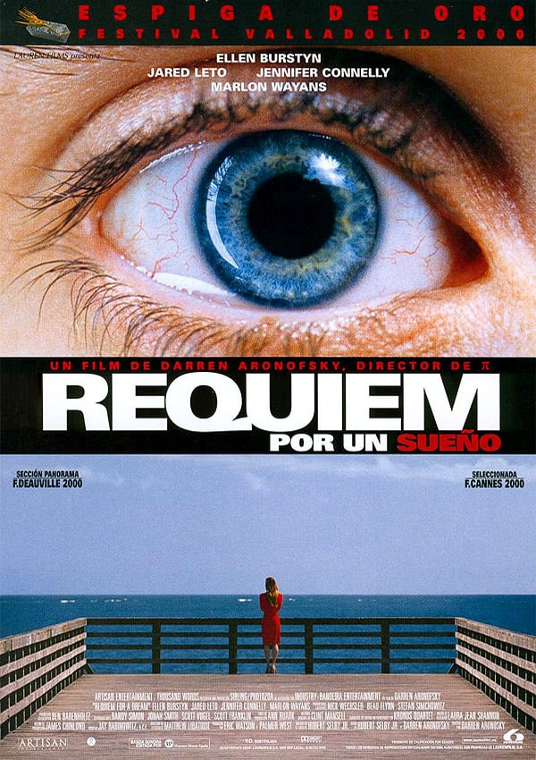

1.Oppenheimer
Durante la Segunda Guerra Mundial, el teniente general Leslie Groves designa al físico J. Robert Oppenheimer para un grupo de trabajo que está desarrollando el Proyecto Manhattan, cuyo objetivo consiste en fabricar la primera bomba atómica.
2.Réquiem por un sueño
Una viuda se vuelve adicta a píldoras dietéticas mientras su hijo libra su propia batalla con estupefacientes. Darren Aronofsky se sumerge de nuevo en el terreno de lo visceral con esta durísima pero fascinante película en torno a la adicción.
3.The Batman

En su segundo año luchando contra el crimen, Batman explora la corrupción existente en la ciudad de Gotham y el vínculo de esta con su propia familia. Además, entrará en conflicto con un asesino en serie conocido como "el Acertijo".